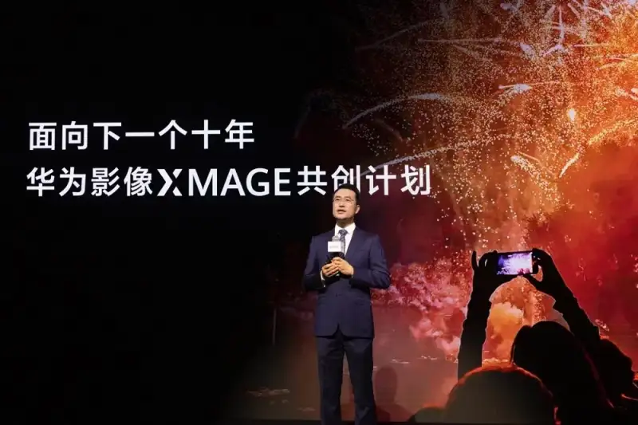
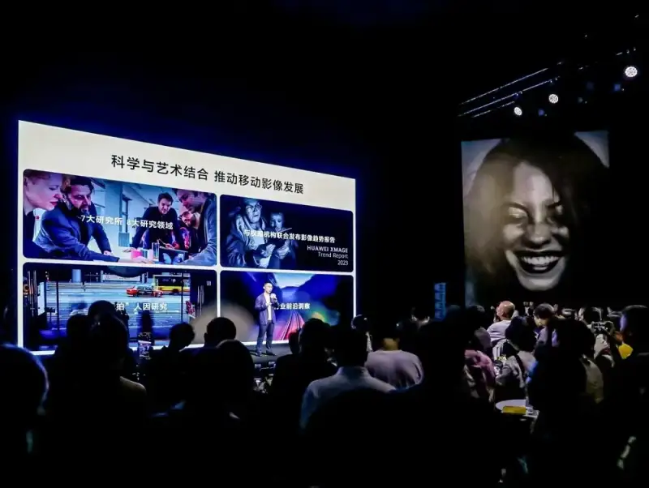
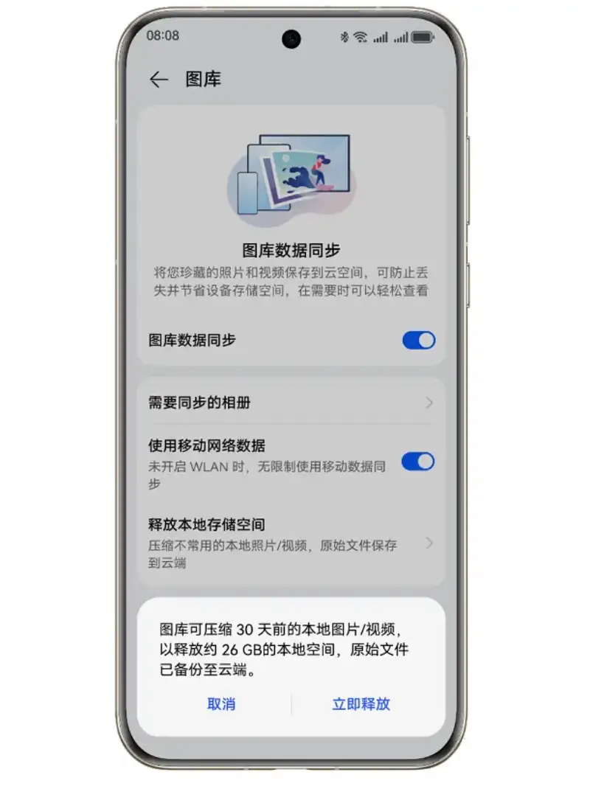

Published: 2024-05-23
Source link: https://www.cnphotos.net/academy/show-176.html
The 2024 HUAWEI Image Competition (XMAGE Awards) is now open for entries from HUAWEI phone users around the world. On May 22, the XMAGE Image Night event was held at the Tank Shanghai art center. Guests gathered on site, including He Gang, CEO of the HUAWEI Consumer BG, Li Xiaolong, CTO of the HUAWEI Consumer BG, Chen Xiaobo, vice chairman of the ninth China Photographers Association, and Zhao Xiaoding, a film cinematographer and vice president of the China Society of Cinematographers. They discussed the future of mobile imaging.

As HUAWEI own mobile imaging brand, XMAGE shows HUAWEI ongoing innovation and accumulated experience in mobile imaging. It aims to spark the imagination, creativity, and appreciation of more users. It wants phone images to do more than record the present. They should also show the creator's thought and emotion, and carry an image power that goes beyond the surface. Now that users can create with a phone at any time and place, the convenience and safety of image storage have become ever more critical. With its safe and convenient image storage and management, HUAWEI Cloud Storage is becoming an essential good partner for more and more phone image creators.
Sync Gallery Data with One Tap, and Enjoy Freedom in Image Creation
The growth of mobile imaging lets more users easily take great shots. Yet behind image creation, how to store and manage the carefully shot work is also a vital step. Li Xiaolong said at the event that in the future, device-cloud synergy will be one of the top ten trends in mobile imaging. Device-cloud synergy will strengthen the link between the imaging system and the cloud. It will raise the ceiling on the system's intelligence. At the same time, the real-time protection of the privacy and security system will let the device and cloud together empower image creation and break the bounds of imagination.

The gallery data sync feature of HUAWEI Cloud Storage gives users an efficient, convenient, and smart image storage solution. A HUAWEI phone user only needs to open Cloud Storage, choose cloud-based apps, and turn on gallery data sync. Then the photos and videos in the album upload to the cloud automatically and stay in sync across devices.
Once they sign in to the same HUAWEI account, users can view, edit, and manage the images uploaded to the cloud on a tablet, a PC, or other devices. This removes the tedious manual transfer and brings great convenience to image creators. For a photographer, after shooting on the phone, one tap uploads the work to the cloud. Then they can choose and retouch the images directly on a computer. For a video team, after shooting on the phone and uploading the footage to the cloud, team members can remotely organize and edit the footage on other devices at the same time. This greatly raises the efficiency of video production.

HUAWEI Cloud Storage also offers a free up local space service. When a phone runs low on memory because the gallery has grown too large, turn on this option. The system keeps the original images older than 30 days in the cloud, and keeps only a small-sized version on the device. This eases the storage pressure on the phone. It lets you catch every great moment at any time and give full rein to your imagination, creativity, and appreciation.
Multiple Layers of Encryption to Keep Your Exclusive Memories Forever
Now that image creation is more common and more a part of daily life, a carefully shot photo is no longer just a record. It often holds the creator's deepest emotion, thought, and imagination. For this reason, the safe storage and privacy of album content have become a focus for all creators. HUAWEI Cloud Storage uses multiple layers of encryption and backup. It gives users solid protection for their data and privacy.
HUAWEI Cloud Storage builds its personal cloud storage service to the highest standards of privacy and data security. With industry-leading security technology, it encrypts cloud data on the device between the phone and the cloud. It holds several top global authoritative certifications to protect user privacy. At the same time, it uses advanced multiple encryption and multi-copy redundant storage. This keeps user data safe in the cloud and prevents loss. It stops data from being cracked or stolen. It makes your data visible only to you.
Thanks to the strong cloud storage and security of HUAWEI Cloud Storage, every user can save and manage their images safely and easily. With the leading technology and ideas of HUAWEI Image XMAGE, they can better record life, create art, and express themselves.
We look forward to more users following and joining the 2024 HUAWEI Image Competition. From now until 24:00 on September 15, 2024, Beijing time, sign in to the official competition website and upload your work to enter. Each winner will receive a one-year subscription to the HUAWEI Cloud Storage 2 TB plan. You only need to record the moments that move you and create more creative and moving images. You can leave the storage to your good partner, HUAWEI Cloud Storage.